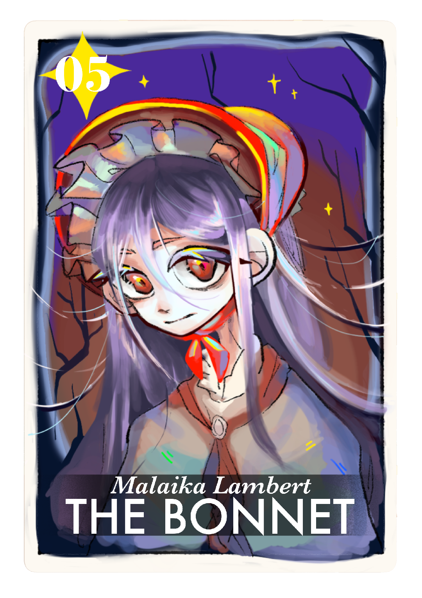
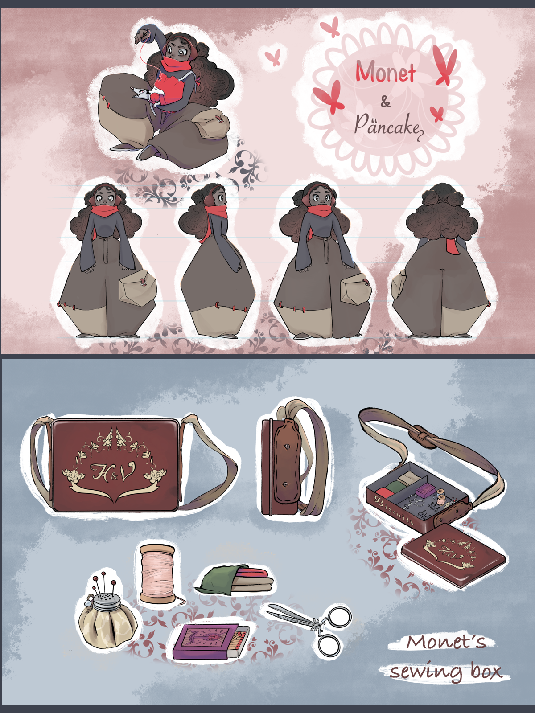
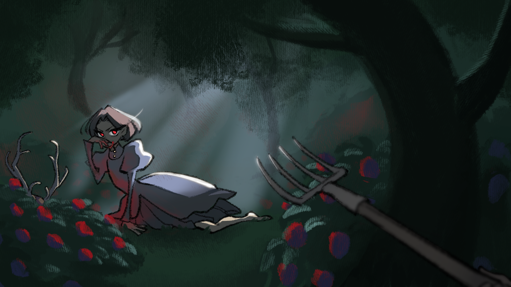
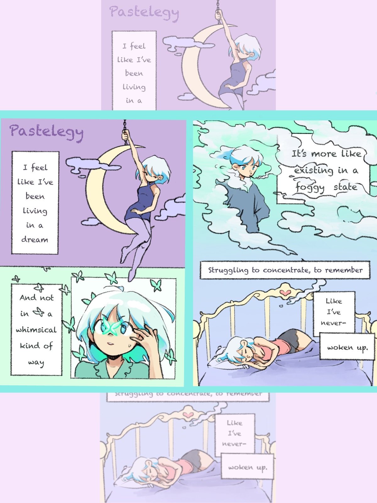
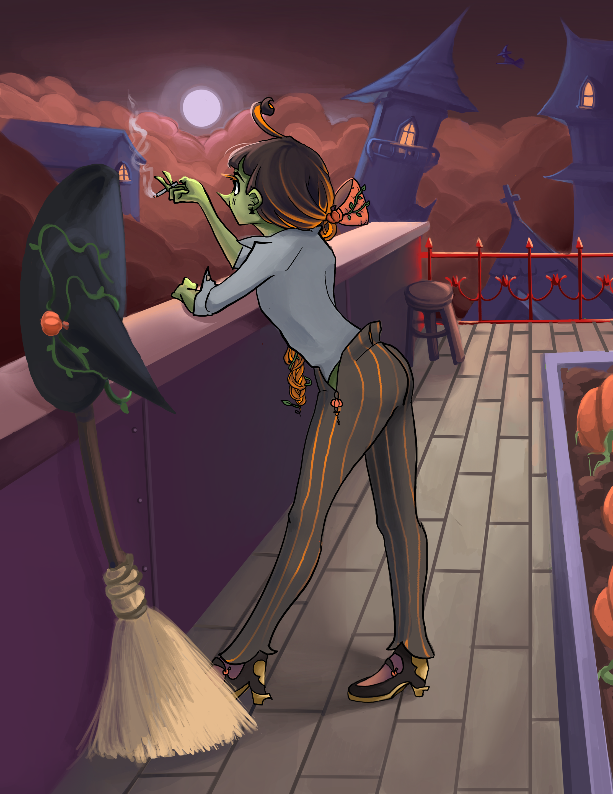
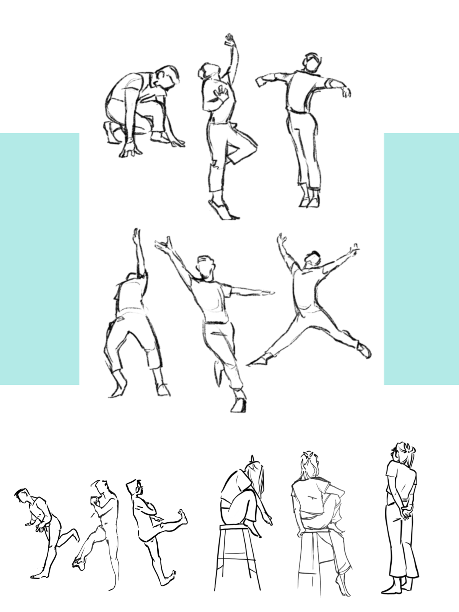
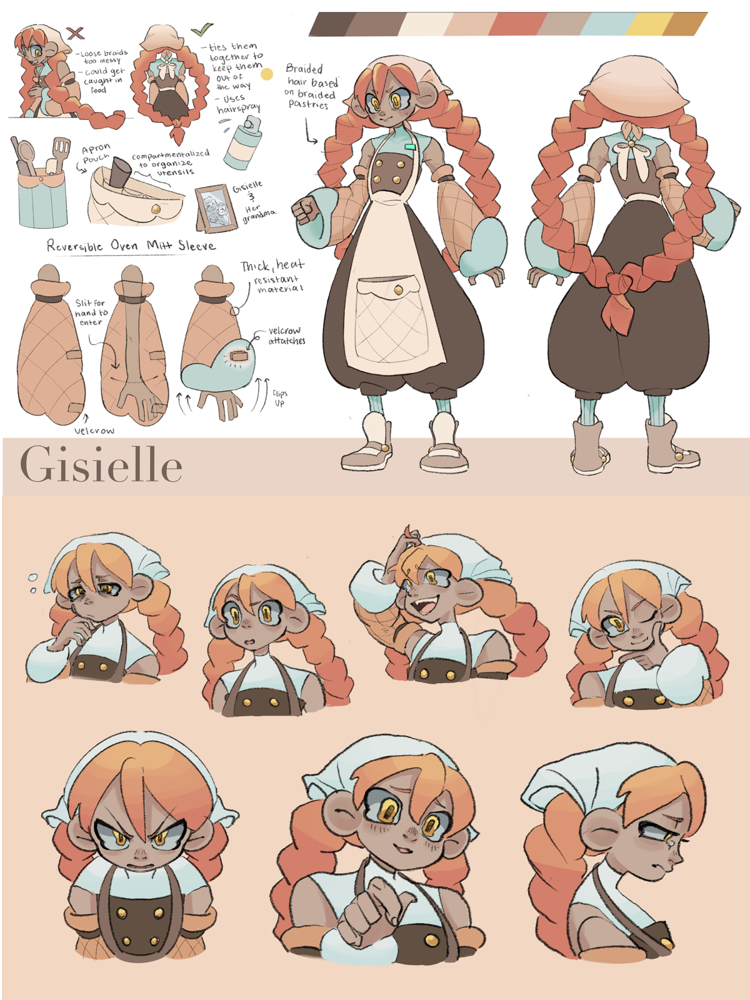

Malaika Lambert - The Bonnet
What’s up guys <3!! I’m Malaika Lambert (May), a 2D character animator/Designer with a major love for stylized, energetic animation. Everything I draw comes with a story, and I am always looking to incorporate themes into my art that don’t only reach me, but anyone else who finds a connection to the emotions I express through my work. My major inspirations are the likes of Teen Titans and other early 2000s cartoons, alternative fashion aesthetics, and the countless webcomics I grew up reading.





